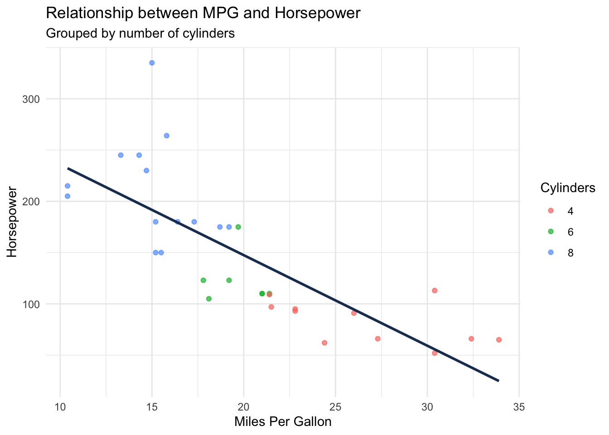
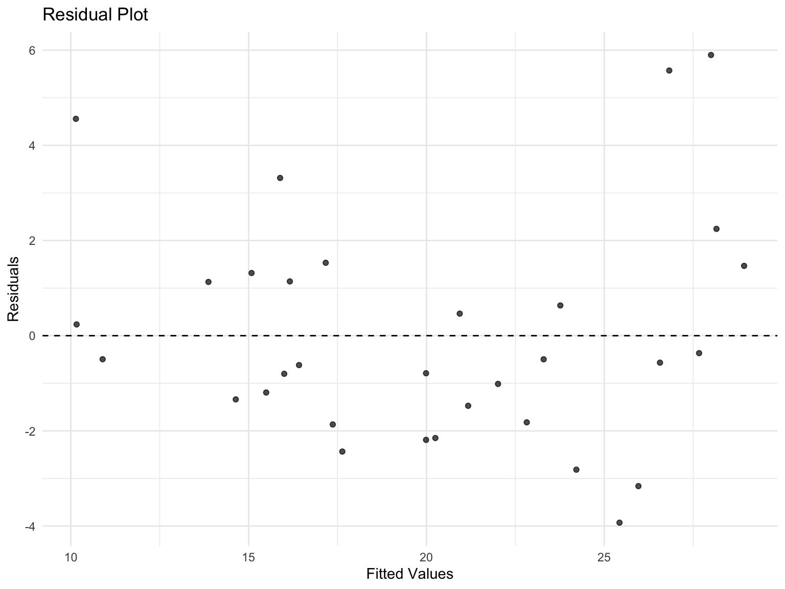

# List the packages readers will need
library(tidyverse)
# Add other packagesYour Technical Blog Post Title
R
Analysis
Tutorial
A brief, engaging description of your post (appears in previews and social sharing). Keep it under 2-3 sentences.
1 Introduction
Brief introduction that:
- Hooks the reader with an interesting problem or observation
- States the purpose of your analysis/tutorial
- Outlines what readers will learn or gain
Key Takeaway
Highlight the main insight readers will gain from this post.
2 Required Packages and Setup
Brief explanation of why these packages were chosen and any setup requirements.
3 The Problem/Data
Code
# Data loading and initial preparation
# Replace with your actual data source
data <- mtcars
glimpse(data)Rows: 32
Columns: 11
$ mpg <dbl> 21, 21, 23, 21, 19, 18, 14, 24, 23, 19, 18, 16, 17, 15,…
$ cyl <dbl> 6, 6, 4, 6, 8, 6, 8, 4, 4, 6, 6, 8, 8, 8, 8, 8, 8, 4, 4…
$ disp <dbl> 160, 160, 108, 258, 360, 225, 360, 147, 141, 168, 168, …
$ hp <dbl> 110, 110, 93, 110, 175, 105, 245, 62, 95, 123, 123, 180…
$ drat <dbl> 3.9, 3.9, 3.9, 3.1, 3.1, 2.8, 3.2, 3.7, 3.9, 3.9, 3.9, …
$ wt <dbl> 2.6, 2.9, 2.3, 3.2, 3.4, 3.5, 3.6, 3.2, 3.1, 3.4, 3.4, …
$ qsec <dbl> 16, 17, 19, 19, 17, 20, 16, 20, 23, 18, 19, 17, 18, 18,…
$ vs <dbl> 0, 0, 1, 1, 0, 1, 0, 1, 1, 1, 1, 0, 0, 0, 0, 0, 0, 1, 1…
$ am <dbl> 1, 1, 1, 0, 0, 0, 0, 0, 0, 0, 0, 0, 0, 0, 0, 0, 0, 1, 1…
$ gear <dbl> 4, 4, 4, 3, 3, 3, 3, 4, 4, 4, 4, 3, 3, 3, 3, 3, 3, 4, 4…
$ carb <dbl> 4, 4, 1, 1, 2, 1, 4, 2, 2, 4, 4, 3, 3, 3, 4, 4, 4, 1, 2…- Describe your data source
- Explain the problem you’re addressing
- Share any initial data preparation steps
4 Analysis/Tutorial Steps
4.1 Step 1: Initial Data Exploration
Code
# Your analysis code here
ggplot(data, aes(x = mpg, y = hp)) +
geom_point(aes(color = factor(cyl)), alpha = 0.7) +
geom_smooth(method = "lm", se = FALSE, color = "#1e3a5f") +
labs(
title = "Relationship between MPG and Horsepower",
subtitle = "Grouped by number of cylinders",
x = "Miles Per Gallon",
y = "Horsepower",
color = "Cylinders"
) +
theme_minimal()
Explain what you found and why it’s interesting.
Here you can add additional context, references, or notes that might be helpful but aren’t essential to the main flow of the post.
4.2 Step 2: Main Analysis
Code
# Core analysis code
model <- lm(mpg ~ hp + wt + cyl, data = data)
summary(model)
Call:
lm(formula = mpg ~ hp + wt + cyl, data = data)
Residuals:
Min 1Q Median 3Q Max
-3.929 -1.560 -0.531 1.185 5.899
Coefficients:
Estimate Std. Error t value Pr(>|t|)
(Intercept) 38.7518 1.7869 21.69 <2e-16 ***
hp -0.0180 0.0119 -1.52 0.1400
wt -3.1670 0.7406 -4.28 0.0002 ***
cyl -0.9416 0.5509 -1.71 0.0985 .
---
Signif. codes: 0 '***' 0.001 '**' 0.01 '*' 0.05 '.' 0.1 ' ' 1
Residual standard error: 2.5 on 28 degrees of freedom
Multiple R-squared: 0.843, Adjusted R-squared: 0.826
F-statistic: 50.2 on 3 and 28 DF, p-value: 2.18e-11Walk through your analysis, explaining: - Why you chose this approach - What the code does - What the results mean
4.3 Step 3: Results and Visualization
Code
# Create compelling visualizations
library(broom)
augmented_data <- augment(model)
ggplot(augmented_data, aes(x = .fitted, y = .resid)) +
geom_point(alpha = 0.7) +
geom_hline(yintercept = 0, linetype = "dashed") +
labs(
title = "Residual Plot",
x = "Fitted Values",
y = "Residuals"
) +
theme_minimal()
Interpret your results and explain their significance.
5 Key Takeaways
Summary of Findings
- Bullet point summary of main findings
- Practical applications
- Important insights
6 Reproducibility
# Print session info for reproducibility
sessionInfo()R version 4.5.0 (2025-04-11)
Platform: aarch64-apple-darwin20
Running under: macOS Sequoia 15.4.1
Matrix products: default
BLAS: /Library/Frameworks/R.framework/Versions/4.5-arm64/Resources/lib/libRblas.0.dylib
LAPACK: /Library/Frameworks/R.framework/Versions/4.5-arm64/Resources/lib/libRlapack.dylib; LAPACK version 3.12.1
locale:
[1] en_US.UTF-8/en_US.UTF-8/en_US.UTF-8/C/en_US.UTF-8/en_US.UTF-8
time zone: America/Los_Angeles
tzcode source: internal
attached base packages:
[1] stats graphics grDevices datasets utils methods base
other attached packages:
[1] broom_1.0.8 shiny_1.10.0 styler_1.10.3 quarto_1.4.4 pacman_0.5.1 readxl_1.4.5 knitr_1.50 lubridate_1.9.4 forcats_1.0.0 stringr_1.5.1
[11] dplyr_1.1.4 purrr_1.0.4 readr_2.1.5 tidyr_1.3.1 tibble_3.2.1 ggplot2_3.5.2 tidyverse_2.0.0 tidytuesdayR_1.1.2 rmarkdown_2.29 kableExtra_1.4.0
[21] janitor_2.2.1 datapasta_3.1.0 ggthemes_5.1.0 conflicted_1.2.0 DT_0.33 naniar_1.1.0 devtools_2.4.5 usethis_3.1.0
loaded via a namespace (and not attached):
[1] tidyselect_1.2.1 viridisLite_0.4.2 farver_2.1.2 R.utils_2.13.0 fastmap_1.2.0 promises_1.3.2 digest_0.6.37 timechange_0.3.0 mime_0.13 lifecycle_1.0.4
[11] ellipsis_0.3.2 processx_3.8.6 magrittr_2.0.3 compiler_4.5.0 rlang_1.1.6 tools_4.5.0 yaml_2.3.10 labeling_0.4.3 htmlwidgets_1.6.4 pkgbuild_1.4.7
[21] xml2_1.3.8 pkgload_1.4.0 miniUI_0.1.1.1 R.cache_0.16.0 withr_3.0.2 R.oo_1.27.0 grid_4.5.0 urlchecker_1.0.1 profvis_0.4.0 xtable_1.8-4
[31] colorspace_2.1-1 scales_1.3.0 cli_3.6.4 generics_0.1.3 remotes_2.5.0 rstudioapi_0.17.1 tzdb_0.5.0 sessioninfo_1.2.3 cachem_1.1.0 splines_4.5.0
[41] cellranger_1.1.0 vctrs_0.6.5 Matrix_1.7-3 jsonlite_2.0.0 hms_1.1.3 visdat_0.6.0 systemfonts_1.2.2 glue_1.8.0 ps_1.9.0 stringi_1.8.7
[51] gtable_0.3.6 later_1.4.2 munsell_0.5.1 pillar_1.10.2 htmltools_0.5.8.1 R6_2.6.1 lattice_0.22-6 evaluate_1.0.3 backports_1.5.0 R.methodsS3_1.8.2
[61] memoise_2.0.1 snakecase_0.11.1 httpuv_1.6.15 Rcpp_1.0.14 nlme_3.1-168 svglite_2.1.3 mgcv_1.9-1 xfun_0.52 fs_1.6.6 pkgconfig_2.0.3 7 Next Steps
- Suggest areas for further exploration
- Mention potential improvements
- Invite reader engagement
8 References
- Cite your sources
- Link to relevant documentation
- Credit other contributors